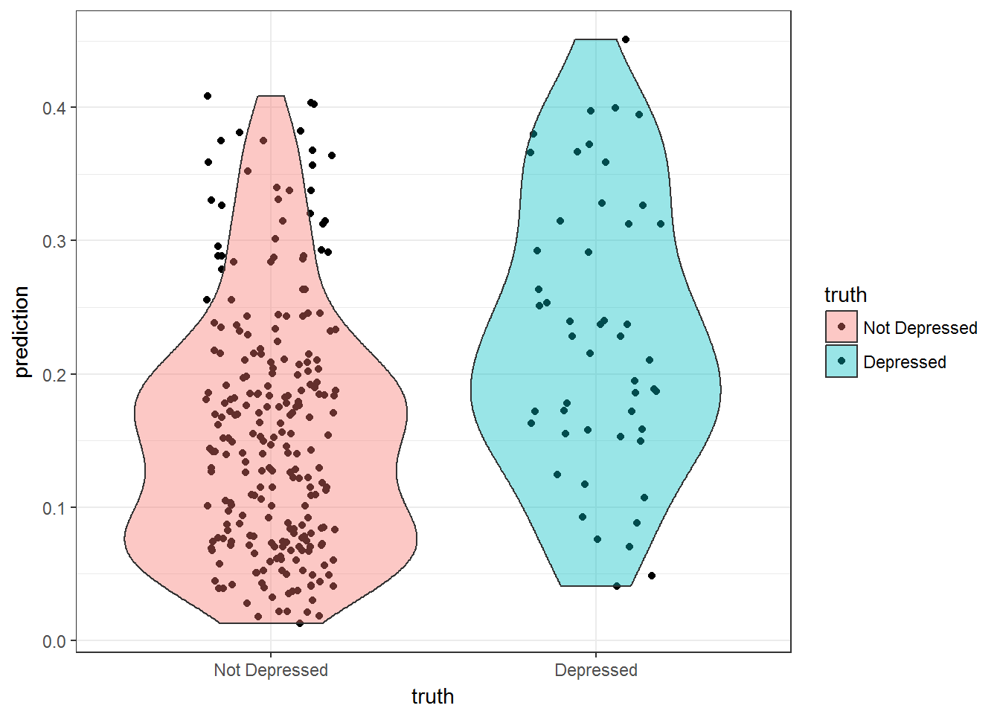
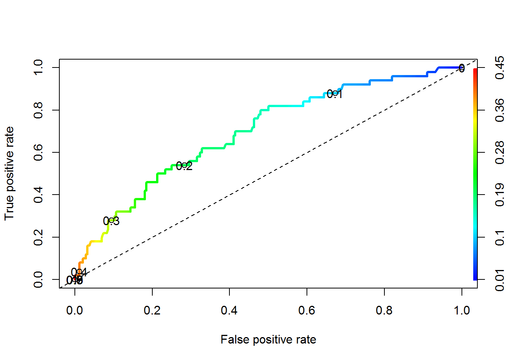
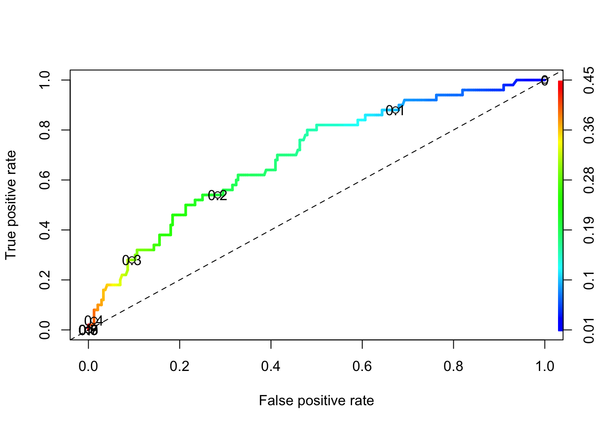

6.3 Classification of Binary outcomes
- Sometimes Odds Ratios can be difficult to interpret or understand.
- Sometimes you just want to report the probability of the event occurring.
- Or sometimes you want to predict whether or not a new individual is going to have the event.
For all of these, we need to calculate \(p_{i} = P(y_{i}=1)\), the probability of the event.
For the main effects model of depression on age, income and gender the predicted probability of depression is: \[ P(depressed) = \frac{e^{-0.676 - 0.02096*age - .03656*income + 0.92945*gender}} {1 + e^{-0.676 - 0.02096*age - .03656*income + 0.92945*gender}} \]
Let’s compare the probability of being depressed for males and females separately, while holding age and income constant at their average value.
depress %>% summarize(age=mean(age), income=mean(income))
## age income
## 1 44.41497 20.57483Plug the coefficient estimates and the values of the variables into the equation and calculate. \[ P(depressed|Female) = \frac{e^{-0.676 - 0.02096(44.4) - .03656(20.6) + 0.92945(1)}} {1 + e^{-0.676 - 0.02096(44.4) - .03656(20.6) + 0.92945(1)}} \]
XB.f <- -0.676 - 0.02096*(44.4) - .03656*(20.6) + 0.92945
exp(XB.f) / (1+exp(XB.f))
## [1] 0.1930504\[ P(depressed|Male) = \frac{e^{-0.676 - 0.02096(44.4) - .03656(20.6) + 0.92945(0)}} {1 + e^{-0.676 - 0.02096(44.4) - .03656(20.6) + 0.92945(0)}} \]
XB.m <- -0.676 - 0.02096*(44.4) - .03656*(20.6)
exp(XB.m) / (1+exp(XB.m))
## [1] 0.08629312The probability for a 44.4 year old female who makes $20.6k annual income has a 0.19 probability of being depressed. The probability of depression for a male of equal age and income is 0.86.
6.3.1 Calculating predictions
So what if you want to get the model predicted probability of the event for all individuals in the data set? There’s no way I’m doing that calculation for every person in the data set.
Using the main effects model from above, stored in the object mvmodel, we can call the predict() command to generate a vector of predictions for each row used in the model.
The predict() function can calculate predictions for any GLM. The model object mvmodel stores the information that it was a logistic regression.
model.pred.prob <- predict(mvmodel, type='response')
head(model.pred.prob)
## 1 2 3 4 5 6
## 0.21108906 0.08014012 0.15266203 0.24527840 0.15208679 0.170564096.3.1.1 Distribution of Predictions
How well does our model do to predict depression?
plot.mpp <- data.frame(prediction = model.pred.prob,
truth = factor(mvmodel$y, labels=c("Not Depressed", "Depressed")))
ggplot(plot.mpp, aes(x=truth, y=prediction, fill=truth)) +
geom_jitter(width=.2) + geom_violin(alpha=.4) + theme_bw()
 What things can you infer from this plot?
What things can you infer from this plot?
Where should we put the cutoff value? At what probability should we classify a record as “depressed”?
6.3.1.2 Optimal Cutoff Value
Often we adjust the cutoff value to improve accuracy. This is where we have to put our gut feeling of what probability constitutes “high risk”. For some models, this could be as low as 30%. It’s whatever the probability is that optimally separates the classes. Let’s look at two ways to visualize model performance as a function of cutoff.
6.3.2 ROC Curves
- We can create a Receiver operating characteristic (ROC) curve to help find that sweet spot.
- ROC curves show the balance between sensitivity and specificity.
- We’ll use the [ROCR] package. It only takes 3 commands:
- calculate
prediction()using the model - calculate the model
performance()on both true positive rate and true negative rate for a whole range of cutoff values. plotthe curve.- The
colorizeoption colors the curve according to the probability cutoff point.
- The
- calculate
library(ROCR)
pr <- prediction(model.pred.prob, mvmodel$y)
perf <- performance(pr, measure="tpr", x.measure="fpr")
plot(perf, colorize=TRUE, lwd=3, print.cutoffs.at=c(seq(0,1,by=0.1)))
abline(a=0, b=1, lty=2)
We can also use the performance() function and say we want to evaluate the \(f1\) measure
perf.f1 <- performance(pr,measure="f")
plot(perf.f1)
ROC curves:
- Can also be used for model comparison: http://yaojenkuo.io/diamondsROC.html
- The Area under the Curve (auc) also gives you a measure of overall model accuracy.
auc <- performance(pr, measure='auc')
auc@y.values
## [[1]]
## [1] 0.6950416.3.3 Model Performance
- Say we decide that a value of 0.15 is our optimal cutoff value.
- We can use this probability to classify each row into groups.
- The assigned class values must match the data type and levels of the true value.
- It also has to be in the same order, so the
0group needs to come first.
- Then we calculate a [Confusion Matrix] using the similarly named function from the
caretpackage.- At it’s core, this is a 2x2 table containing counts of each combination of predicted value and true value.
library(caret)
plot.mpp$pred.class <- ifelse(plot.mpp$prediction <0.15, 0,1)
plot.mpp$pred.class <- factor(plot.mpp$pred.class, labels=c("Not Depressed", "Depressed"))
confusionMatrix(plot.mpp$pred.class, plot.mpp$truth, positive="Depressed")
## Confusion Matrix and Statistics
##
## Reference
## Prediction Not Depressed Depressed
## Not Depressed 123 10
## Depressed 121 40
##
## Accuracy : 0.5544
## 95% CI : (0.4956, 0.6121)
## No Information Rate : 0.8299
## P-Value [Acc > NIR] : 1
##
## Kappa : 0.1615
## Mcnemar's Test P-Value : <2e-16
##
## Sensitivity : 0.8000
## Specificity : 0.5041
## Pos Pred Value : 0.2484
## Neg Pred Value : 0.9248
## Prevalence : 0.1701
## Detection Rate : 0.1361
## Detection Prevalence : 0.5476
## Balanced Accuracy : 0.6520
##
## 'Positive' Class : Depressed
## - 123 people were correctly predicted to not be depressed (True Negative, \(n_{11}\))
- 121 people were incorrectly predicted to be depressed (False Positive, \(n_{21}\))
- 10 people were incorrectly predicted to not be depressed (False Negative, \(n_{12}\))
- 40 people were correctly predicted to be depressed (True Positive, \(n_{22}\))
Other terminology:
- Sensitivity/Recall/True positive rate: P(predicted positive | total positive) =
40/(10+40) = .8 - Specificity/true negative rate: P(predicted negative | total negative) =
123/(123+121) = .504 - Precision/positive predicted value: P(true positive | predicted positive) =
40/(121+40) = .2484 - Accuracy: (TP + TN)/ Total:
(40 + 123)/(40+123+121+10) = .5544 - Balanced Accuracy: \([(n_{11}/n_{.1}) + (n_{22}/n_{.2})]/2\) - This is to adjust for class size imbalances (like in this example)
- F1 score: the harmonic mean of precision and recall. This ranges from 0 (bad) to 1 (good): \(2*\frac{precision*recall}{precision + recall}\) =
2*(.2484*.8)/(.2484+.8) = .38